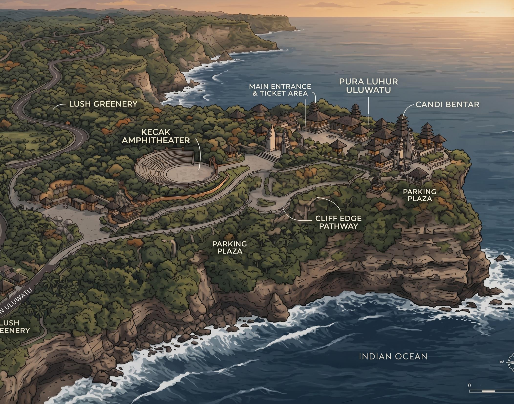

Buka setiap hari tanpa libur untuk ziarah dan eksplorasi tebing.
Informasi Pengunjung, Tiket &
Tata Tertib Sakral Uluwatu
Panduan terpadu peziarah spiritual dan wisatawan dunia. Menyelaraskan kenyamanan akses tebing samudra setinggi 70 meter dengan keluhuran kearifan adat kawasan suci Sad Kahyangan Pura Luhur Uluwatu.
Pintu tribun dibuka. Disarankan hadir lebih awal demi posisi sunset terbaik.
Pementasan 70 penyuara di pelataran tebing berlatar matahari terbenam.
Tebing Pecatu, Kuta Selatan, Kabupaten Badung, Pulau Bali.
PURA LUHUR ULUWATU
70 PENYUARA SAKRAL
RESERVASI E-TIKET RESMI
MATAHARI TERBENAM SAMUDRA
HARMONI TRI HITA KARANA
AWIG-AWIG DESA ADAT PECATU
CAK-CAK-CAK
SAD KAHYANGAN BALI
Orientasi Ruang Mandala Uluwatu
Pura Luhur Uluwatu bertakhta di atas tanjung karang setinggi 70 meter yang menjorok ke Samudra Hindia. Kenali pembagian zona sakral pemujaan, amfiteater pementasan seni, dan titian panorama demi kenyamanan ziarah Anda.

ZONA PEMENTASAN
Kecak Amphitheater
Tribun melingkar untuk menikmati Tari Kecak saat matahari terbenam.
Jadwal & Alur Kunjungan Harmonis
Rangkaian pementasan terpadu selaras dengan detik-detik matahari terbenam. Ikuti rekomendasi waktu berikut agar ziarah dan pengalaman menonton Anda berlangsung tenang tanpa terburu-buru.
16:00 – 16:30 WITA
FASE 01
Kedatangan & Penyambutan Adat
Tiba di gerbang Candi Bentar Uluwatu. Mengambil kain kamen dan selendang kuning (senteng) yang telah disucikan di loket masuk, lalu menyusuri jalan setapak hutan perindang kera.
Saran: Amankan kacamata, topi, perhiasan, dan barang berkilau dari kera jinak.
16:30 – 17:00 WITA
FASE 02
Eksplorasi Tebing Panorama
Menikmati embusan angin laut Samudra Hindia di sepanjang jalur titian tebing 1,2 km. Mengabadikan siluet pura yang menjulang anggun di atas batuan karang setinggi 70 meter.
Saran: Gunakan alas kaki nyaman untuk kontur bebatuan karang kapur.
17:00 – 17:45 WITA
FASE 03
Pintu Masuk Amfiteater Terbuka
Petugas adat membuka gerbang amfiteater melingkar. Wisatawan dengan e-tiket resmi dipersilakan menempati undakan tribun terbuka dengan sudut pandang matahari terbenam tanpa halangan.
Saran: Datang pukul 17:00 WITA untuk mendapatkan posisi tengah tribun terbaik.
18:00 – 18:45 WITA
FASE 04 · KLIMAKS SENJA
Kidung Sakral & Epik Ramayana
Tujuh puluh penyuara pria duduk melingkari obor sentral. Lantunan poliritmik perkusi vokal cak-cak-cak menggelegar mengiringi kisah Rama, Sita, Rahwana, dan gugurnya Jatayu saat langit berubah keemasan.
Saran: Jaga ketenangan dan nikmati perpaduan alami deburan ombak dan harmonisasi suara.
18:45 – 19:00 WITA
FASE 05
Hanoman Obong & Penutupan
Atraksi sakral kobaran api bara tempurung kelapa saat ksatria kera putih Hanoman menembus lingkaran api Alengka. Diakhiri dengan pemercikan tirtha suci dan doa pembersihan arena.
Saran: Tetap duduk hingga pemangku adat menyelesaikan kidung puja penutup.
Tata Tertib & Etika Kawasan Suci
Pura Luhur Uluwatu merupakan salah satu dari enam Pura Sad Kahyangan penjaga spiritual Pulau Dewata. Seluruh pengunjung dan peziarah diwajibkan menghormati tatanan adat luhur demi menjaga keharmonisan Tri Hita Karana.
01
BUSANA ADAT WAJIB
Kain Kamen & Selendang Suci
Wajib mengenakan pakaian sopan yang menutupi pundak. Pengunjung wajib mengikatkan kain kamen dan selendang kuning (senteng) di pinggang. Kain dan selendang telah disediakan gratis bagi pemegang tiket di gerbang masuk.
Wajib bagi semua pengunjung tanpa terkecuali
02
ZONASI SAKRAL
Batas Kawasan Suci Persembahyangan
Area Jeroan (pelataran utama pura) hanya dibuka untuk umat Hindu yang hendak melakukan persembahyangan sembah bakti. Wisatawan umum dilarang melintasi pembatas sakral atau menaiki pelinggih/candi bentar.
Hormati kesakralan mandala persembahyangan umat
03
FAUNA HUTAN LINDUNG
Kewaspadaan Terhadap Kera Ekor Panjang
Hutan alas Pura Uluwatu dihuni kawanan kera suci (Macaca fascicularis). Dilarang menyentuh, menggoda, atau menatap mata kera secara agresif. Simpan kacamata hitam, ponsel, topi, dan botol minum di dalam tas tertutup.
Jaga barang pribadi tetap tersimpan rapi
04
KETENANGAN PEMENTASAN
Larangan Memasuki Arena Api
Selama pementasan Tari Kecak berlangsung, penonton dilarang berdiri di depan tribun, melangkah ke tengah lingkaran para penari, atau mendekati kobaran bara api sakral demi keselamatan bersama.
Dilarang menyalakan lampu flash kamera ke arah penari
Tarif Tiket Masuk & Tari Kecak
Retribusi resmi terkelola transparan oleh Pemerintah Kabupaten Badung & Desa Adat Pecatu untuk pelestarian pura cagar budaya, pemeliharaan tebing, serta kelangsungan hidup sanggar seniman lokal.
Tiket Retribusi Kawasan Suci Pura Uluwatu
Akses seluruh area kawasan tebing Sad Kahyangan, hutan kera lindung, jalur titian panorama 1,2 km, dan peminjaman kain kamen selendang adat.
WISATAWAN DOMESTIK (WNI)
Rp 30.000
/ Dewasa
Anak-anak (3–10 tahun): Rp 20.000
FOREIGN VISITOR (WNA)
Rp 50.000
/ Adult
Child (3–10 years): Rp 30.000
- ✓ Peminjaman kain kamen & selendang gratis
- ✓ Asuransi perlindungan keselamatan kawasan
- ✓ Akses jalur titian panorama tebing Samudra
SANGAT DIMINATI · CEPAT HABIS
Tiket Tari Kecak & Api Sunset Uluwatu
Tempat duduk tribun amfiteater melingkar menghadap langsung ke arah matahari terbenam Samudra Hindia dengan pertunjukan 70 penyuara sakral.
TARIF SEMUA PENGUNJUNG
Rp 150.000
/ Orang (Usia > 2 Tahun)
Kapasitas Maksimal: 1.200 Kursi / Hari
- ✓ Tempat duduk bernomor di amfiteater sunset
- ✓ Sinopsis naskah Ramayana lengkap (6 bahasa)
- ✓ Jaminan kuota tanpa antre berdesakan di loket
- ✓ Durasi 60 menit penuh drama, api & kidung suara
E-Tiket terbit langsung dengan QR Code verifikasi resmi.
Sangat Disarankan Melakukan Pemesanan E-Tiket Secara Online
Karena kapasitas tribun amfiteater dibatasi demi kenyamanan dan keselamatan, tiket pementasan Tari Kecak senja kerap habis terjual sebelum pukul 16:30 WITA di loket fisik. Pemesanan daring menjamin kuota tempat duduk Anda.
Pertanyaan Umum Wisatawan (FAQ)
Jawaban atas pertanyaan yang paling sering diajukan peziarah dan wisatawan seputar kedatangan, tata cara penukaran tiket, fasilitas, dan cuaca di Pura Luhur Uluwatu.